| 北京大学加拿大校友会工作报告 |
|
十月 03, 2016
北京大学加拿大校友会工作报告
2016-10-03 pkuca pkuca一 北京大学加拿大校友会组织架构 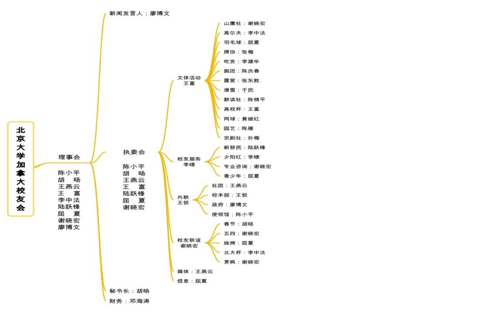 北京大学加拿大校友会宗旨：大家的平台认识、认知、认可共建未名家园二 2013-2016活动总结及2016-2018工作计划 1 年度活动参加人数一览表： 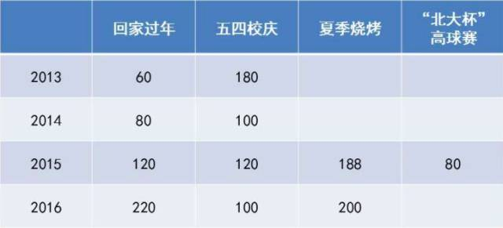 （1）2015年回家过年合影，到场约120位。 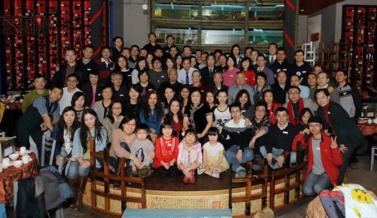 （2）2016年回家过年合影，到场约220位。 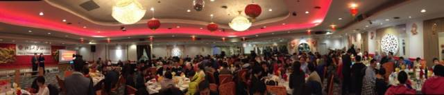 （3）2015年五四校庆合影，到场约120位。 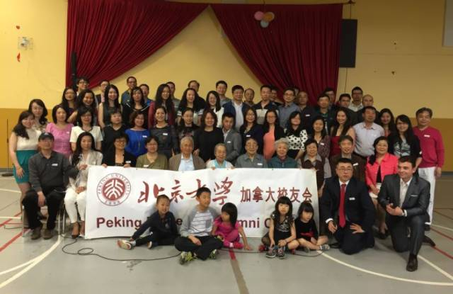 （4）2016年五四校庆活动，分马拉松、五四沙龙和高球联谊，参加人数约100。 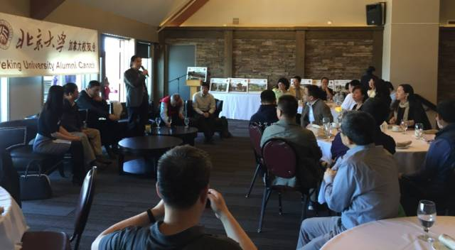 （5）2015年BBQ，参加人数188人。 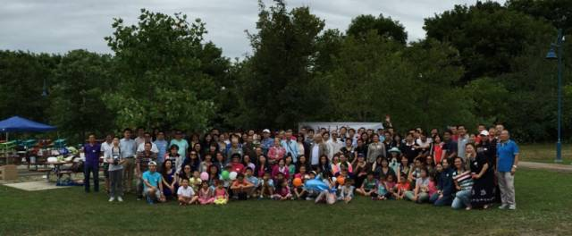 （6）2016年BBQ，参加人数200多。 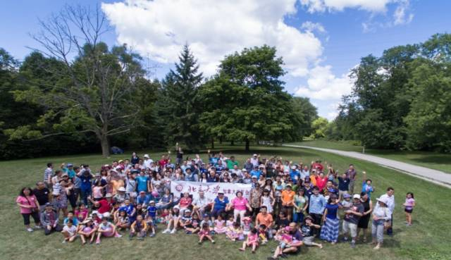 （7） “北大杯“高球赛 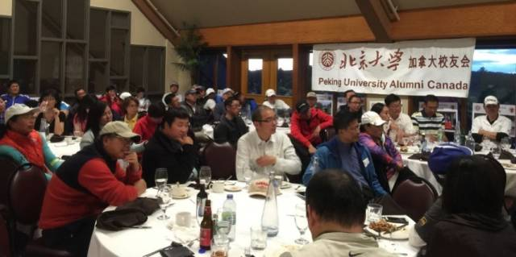 2 联谊活动、校友服务一览表： 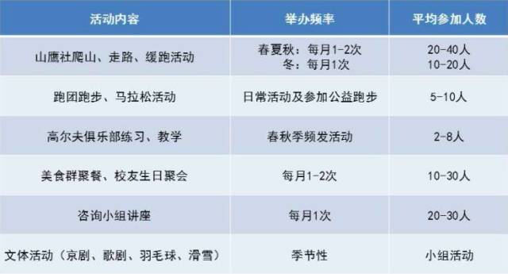 （1） 山鹰社，活动风雨无阻。 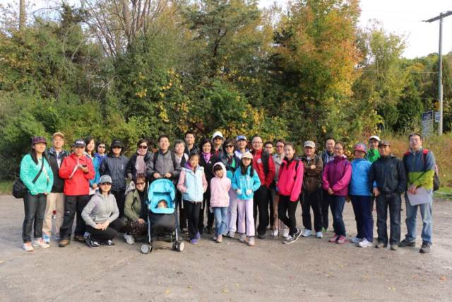 （2） 山鹰跑团，多次参加公益跑步，参加半程马拉松和全程马拉松校友十余位。 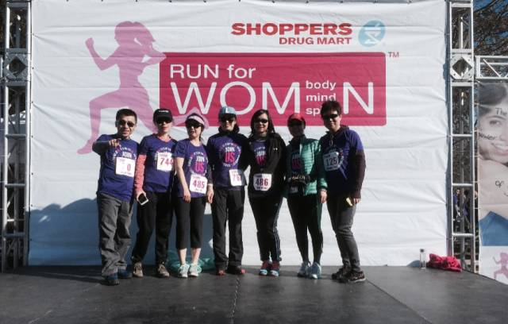 （3）高尔夫活动，北大杯，校友牵头的高校杯，校友负责的北高俱乐部和CIGA俱乐部。 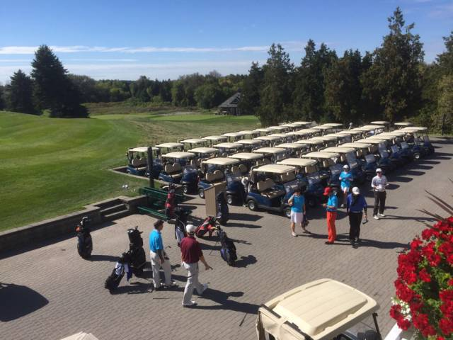 （4） 校友聚会及生日 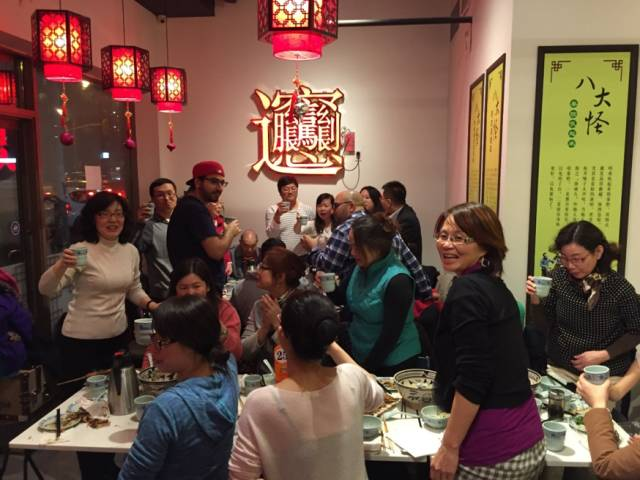 （5）专业讲座，涉及到报税，汽车维护，品酒等生活常识。 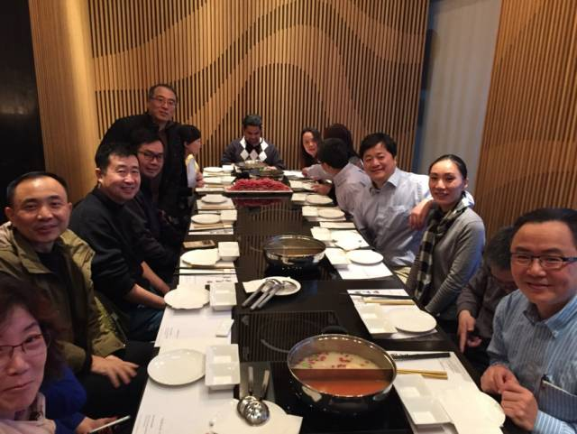 （6） 旗袍秀及相亲会 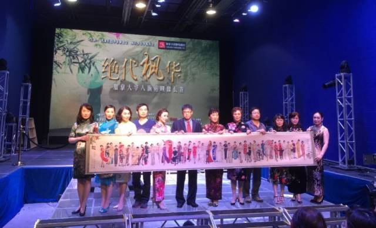 3 校友会换届及选举在加拿大各大校友会中率先以民主选举方式产生校友会理事会，在当地社区中产生良好影响。 依据《加拿大非盈利公司组织法》正式注册，严格按照当地法律登记、运作，为当地华人联谊性质的团体（校友会、同乡会等）开了良好的先例。 建立了良好、有效的组织机构，制订了严密的运作章程。 （1） 2013年换届 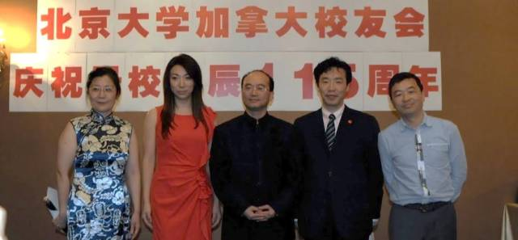 （2） 2015年换届 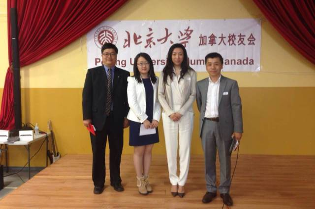 （3） 校友会注册 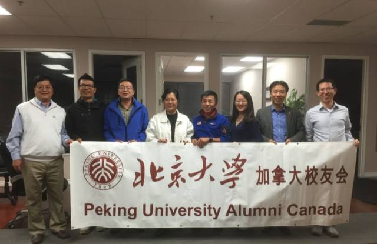 4 加拿大校友会筹款个例北京大学加拿大校友会校友募捐公告摘要 2015年8月3日详细捐款明细报告如下：人民币捐款：224笔，合计433,733元。扣除银行转账费用，合计433,613.37元。 加元捐款：58笔，合计11,746.25加元。扣除捐赠人指定葬礼费用600元，合计11,146.25加元。 美元捐款：15笔，合计3350美元。 尊重逝者，不提实名。尊重家属意见，所有捐款已汇入亲属指定账户。 三 2016年-2018年工作计划 1. 继续组织好年度活动如春节年会、五四校庆和夏季烧烤，争取参加人员规模在目前200人左右的水平上有所突破。2.继续组织校友们喜闻乐见的各项活动，在发挥原有成熟社团和俱乐部的基础上，支持新的校友社团发展。3.继续在校友安居、教育、就业和生活等方面给予支持和帮助，积极支持、协助校友融入当地主流社会。4. 2017年5月完成换届选举和理事会注册更新。5.坚持“校友会是全体校友的平台”的宗旨，以实际活动、让更多的校友认同校友会、融入校友会大家庭。 |